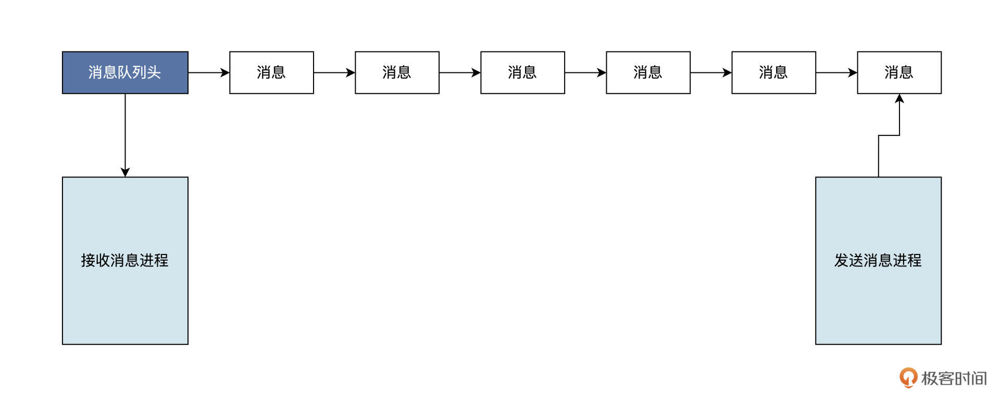
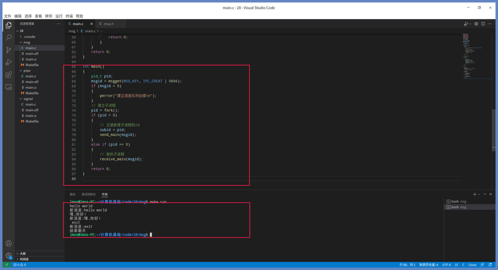
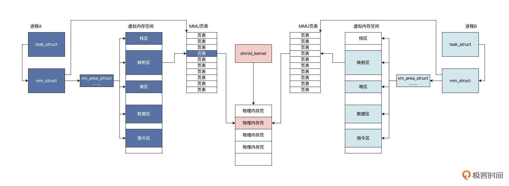
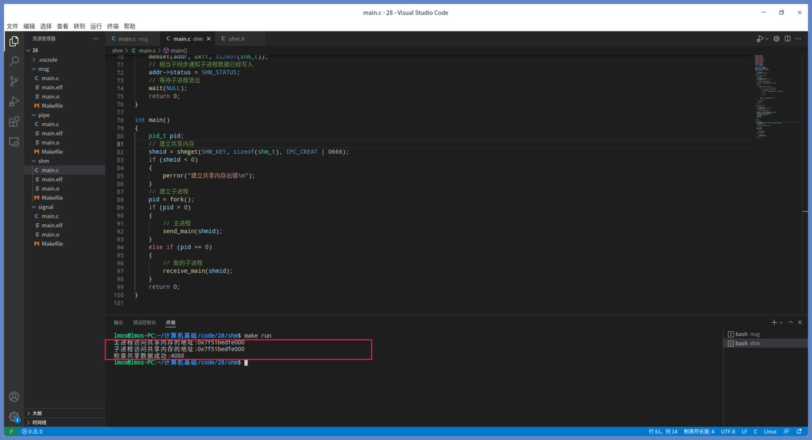
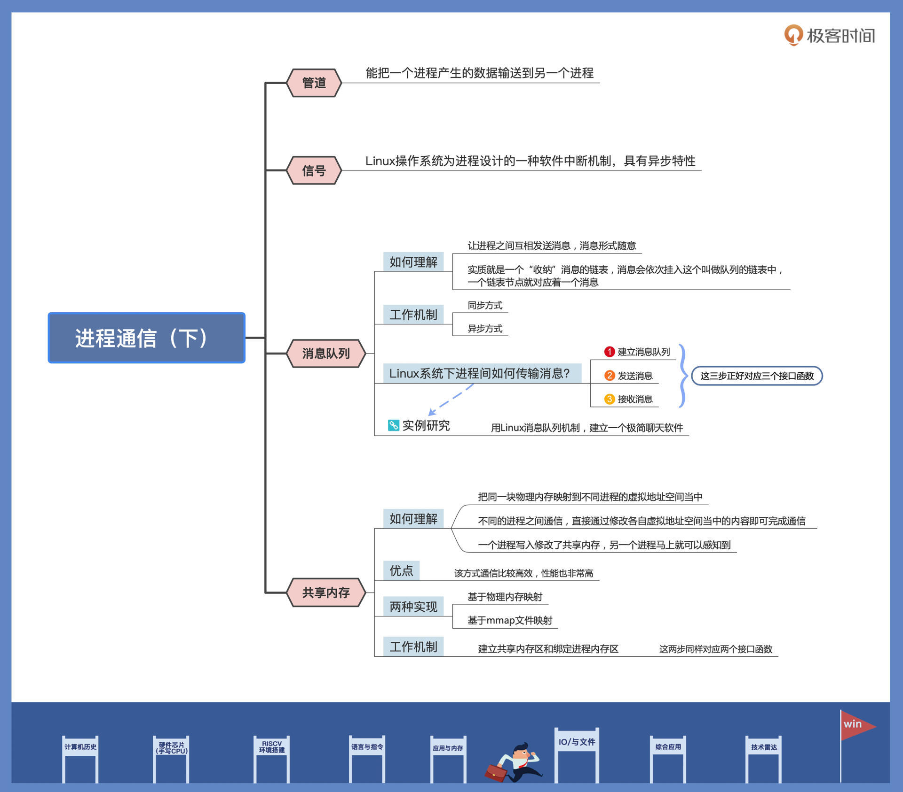

- 00 开篇词 练好基本功，优秀工程师成长第一步.md.html
- 01 CISC & RISC：从何而来，何至于此.md.html
- 02 RISC特性与发展：RISC-V凭什么成为“半导体行业的Linux”？.md.html
- 03 硬件语言筑基（一）：从硬件语言开启手写CPU之旅.md.html
- 04 硬件语言筑基（二）_ 代码是怎么生成具体电路的？.md.html
- 05 指令架构：RISC-V在CPU设计上到底有哪些优势？.md.html
- 06 手写CPU（一）：迷你CPU架构设计与取指令实现.md.html
- 07 手写CPU（二）：如何实现指令译码模块？.md.html
- 08 手写CPU（三）：如何实现指令执行模块？.md.html
- 09 手写CPU（四）：如何实现CPU流水线的访存阶段？.md.html
- 10 手写CPU（五）：CPU流水线的写回模块如何实现？.md.html
- 11 手写CPU（六）：如何让我们的CPU跑起来？.md.html
- 12 QEMU：支持RISC-V的QEMU如何构建？.md.html
- 13 小试牛刀：跑通RISC-V平台的Hello World程序.md.html
- 14 走进C语言：高级语言怎样抽象执行逻辑？.md.html
- 15 C与汇编：揭秘C语言编译器的“搬砖”日常.md.html
- 16 RISC-V指令精讲（一）：算术指令实现与调试.md.html
- 17 RISC-V指令精讲（二）：算术指令实现与调试.md.html
- 18 RISC-V指令精讲（三）：跳转指令实现与调试.md.html
- 19 RISC-V指令精讲（四）：跳转指令实现与调试.md.html
- 20 RISC-V指令精讲（五）：原子指令实现与调试.md.html
- 21 RISC-V指令精讲（六）：加载指令实现与调试.md.html
- 22 RISC-V指令精讲（七）：访存指令实现与调试.md.html
- 23 内存地址空间：程序中地址的三种产生方式.md.html
- 24 虚实结合：虚拟内存和物理内存.md.html
- 25 堆&栈：堆与栈的区别和应用.md.html
- 26 延迟分配：提高内存利用率的三种机制.md.html
- 27 应用内存管理：Linux的应用与内存管理.md.html
- 28 进程调度：应用为什么能并行执行？.md.html
- 29 应用间通信（一）：详解Linux进程IPC.md.html
- 30 应用间通信（二）：详解Linux进程IPC.md.html
- 31 外设通信：IO Cache与IO调度.md.html
- 32 IO管理：Linux如何管理多个外设？.md.html
- 33 lotop与lostat命令：聊聊命令背后的故事与工作原理.md.html
- 34 文件仓库：初识文件与文件系统.md.html
- 35 Linux文件系统（一）：Linux如何存放文件？.md.html
- 36 Linux文件系统（二）：Linux如何存放文件？.md.html
- 37 浏览器原理（一）：浏览器为什么要用多进程模型？.md.html
- 38 浏览器原理（二）：浏览器进程通信与网络渲染详解.md.html
- 39 源码解读：V8 执行 JS 代码的全过程.md.html
- 40 内功心法（一）：内核和后端通用的设计思想有哪些？.md.html
- 41 内功心法（二）：内核和后端通用的设计思想有哪些？.md.html
- 42 性能调优：性能调优工具eBPF和调优方法.md.html
- 先睹为快：迷你CPU项目效果演示.md.html
- 加餐01 云计算基础：自己动手搭建一款IAAS虚拟化平台.md.html
- 加餐02 学习攻略（一）：大数据&云计算，究竟怎么学？.md.html
- 加餐03 学习攻略（二）：大数据&云计算，究竟怎么学？.md.html
- 加餐04 谈谈容器云与和CaaS平台.md.html
- 加餐05 分布式微服务与智能SaaS.md.html
- 国庆策划01 知识挑战赛：检验一下学习成果吧！.md.html
- 国庆策划02 来自课代表的学习锦囊.md.html
- 国庆策划03 揭秘代码优化操作和栈保护机制.md.html
- 温故知新 思考题参考答案（一）.md.html
- 用户故事 我是怎样学习Verilog的？.md.html
- 结束语 心若有所向往，何惧道阻且长.md.html
- 捐赠
30 应用间通信（二）：详解Linux进程IPC
你好，我是LMOS。
上节课，我们学习了信号和管道这两种通信方法，这节课我们接着看看消息队列和共享内存这两种通信方式。在大型商业系统中，通常会把功能拆分成几大模块，模块以应用形式存在，就需要消息队列和内存共享来使模块之间进行通信和协作，这就是利用通信机制将应用解耦。
这节课的配套代码，你可以从这里下载。话不多说，我们正式开讲吧！
消息队列
消息队列是Linux提供的一种进程间通信方法，它能让进程之间互相发送消息。这些消息的形式由进程自己决定，可以是文本，也可以是二进制的，格式可以随意，只要另一个进程认识就行。
你可以把消息想象成一个数据记录，并且这个记录具有特定的格式以及特定的顺序。消息队列实质就是一个“收纳”消息的链表，消息会依次挂入这个叫做队列的链表中，一个链表节点就对应着一个消息。
接下来的问题就是，谁有权操作这个消息队列？答案是对这个消息队列有写权限的进程可以向其中插入新的消息；对消息队列有读权限的进程，则可以从其中读出消息。逻辑结构如下图所示：

Linux采用消息队列来实现消息传递，新的消息总是放在队列的末尾，但接收的时候通常是从队列头开始，也可以从中间抽取。发送消息的方式可以是同步的，也可以是异步的。在同步方式的情况下，发送方在消息队列为满时，要进入等待状态。接收方在消息队列为空时，也要进入等待状态；而异步方式中，发送方和接收方都不必等待，而是直接返回。
Linux系统下进程间传输消息要分三步走：建立消息队列、发送消息、接收消息。
我猜，聪明的你已经发现了，这三步正好就对应着三个接口函数， 代码如下所示：
//获取已经存在的消息队列，或者建立一个新的消息队列
// __key是一个整数，可以自己定义
// __msgflg是建立消息队列的标志和权限
//返回-1 表示失败，其他正整数为消息队列标识，像文件句柄一样
int msgget (key_t __key, int __msgflg);
//向__msqid表示的消息队列，发送一个新的消息
// __msqid表示消息队列
// __msgp表示消息结构
// __msgsz表示消息大小
// __msgflg同步、异步等标志
//返回-1 表示失败，其他表示发送成功
int msgsnd (int __msqid, const void *__msgp, size_t __msgsz, int __msgflg);
//在__msqid表示的消息队列，接收消息
// __msqid表示消息队列
// __msgp表示消息结构，用于接收消息内容
// __msgsz表示接收消息大小
// __msgtyp表示接收消息类型
// __msgflg同步、异步等标志
//返回-1 表示失败，其他表示成功接收消息的大小
ssize_t msgrcv (int __msqid, void *__msgp, size_t __msgsz, long int __msgtyp, int __msgflg);
Linux内核运行过程中缓存了所有的消息队列，这也是为什么msgget函数能打开一个已经存在的消息队列。只有在Linux内核重启或者显示删除一个消息队列时，这个消息队列才会真正被删除。记录消息队列的数据结构（struct ipc_ids）位于Linux内核中，Linux系统中的所有消息队列都能在该结构中访问。
在最新版本（2.6以上的版本）的Linux中，ipc_ids包含在ipc_namespace结构体中，而且Linux又定义了一个ipc_namespace结构的全局变量init_ipc_ns，用来保存ipc_namespace结构的实例。这里我就不再往下展开了，你有兴趣可以自行研究。
现在我们结合实战练练手，试着用Linux消息队列机制，建立一个“自说自话”的聊天软件。这个聊天软件是这样设计的：首先在主进程中建立一个消息队列；然后建立一个子进程，在子进程中等待主进程发过来的消息，并显示出来；最后，主进程等待用户输入消息，并将消息发送给消息队列。
按照这个设计，看上去要分成这样三步去实现：首先我们需要建立消息队列。具体就是调用msgget函数，还要提供一个消息队列的键，这个键用于表示该消息队列的唯一名字。当这个键对应的消息队列存在的时候，msgget函数将返回该消息队列的标识；如果这个队列不存在，就创建一个消息队列，然后返回这个消息队列的标识。
代码如下所示：
//消息类型
#define MSG_TYPE (041375)
//消息队列键
#define MSG_KEY (752364)
//消息大小
#define MSG_SIZE (256)
int main()
{
pid_t pid;
msgid = msgget(MSG_KEY, IPC_CREAT | 0666);
if (msgid < 0)
{
perror("建立消息队列出错\n");
}
// 建立子进程
pid = fork();
if (pid > 0)
{
}
else if (pid == 0)
{
}
return 0;
}
结合代码我们可以看到，msgget函数的__mflg参数是IPC_CREAT | 0666，其中的IPC_CREAT表示没有MSG_KEY对应的消息队列就新建一个，0666则表示该消息队列对应的权限，即所有用户可读写。
接着是第二步实现，成功建立消息队列后，开始调用fork函数建立子进程。在子进程里什么也没干，我们这就来写写子进程的代码，如下所示：
//消息体
typedef struct Msg
{
long type;
char body[MSG_SIZE];
} msg_t;
//子进程运行的函数 用于接收消息
int receive_main(int mid)
{
msg_t msg;
while (1)
{
ssize_t sz = msgrcv(mid, &msg, MSG_SIZE, MSG_TYPE, MSG_NOERROR);
if (sz < 0)
{
perror("获取消息失败");
}
printf("新消息:%s\n", msg.body);
//判断是exit就退出
if (strncmp("exit", msg.body, 4) == 0)
{
printf("结束聊天\n");
exit(0);
}
}
return 0;
}
我来描述一下这段代码的内容。子进程中，在一个循环里调用了msgrcv函数，接收mid标识的消息队列中的消息，存放在msg结构体中，消息的大小和类型都与发送消息一样，MSG_NOERROR表示消息太大也不会出错。随后打印出消息内容，如果是exit的消息内容，则结束子进程。
最后，我们来完成第三步，有了接收消息的代码，还得有发送代码的程序，我们马上写好它，如下所示：
int send_main(int mid)
{
msg_t msg;
while (1)
{
// 设置消息类型
msg.type = MSG_TYPE;
// 获取用户输入并放在消息体中
scanf("%[^\n]%*c", msg.body);
// 发送消息
msgsnd(mid, &msg, MSG_SIZE, 0);
//判断是exit就退出
if (strncmp("exit", msg.body, 4) == 0)
{
return 0;
}
}
return 0;
}
对照代码可以看到，发送代码的就是send_main函数，这个函数由主进程调用，它会在一个循环中设置消息类型后，获取用户输入的消息内容并放入msg消息结构体中。然后，调用msgsnd函数向mid标识的消息队列发送消息，消息来自于msg结构体变量，指定MSG_SIZE为消息大小，并且以同步方式发送消息。
现在我们调试一下，如下图所示：

你也可以动手验证一下，如果出现跟我截图中相同的结果，就说明调试成功。
这就是Linux系统提供给消息队列机制，其作用就是方便进程之间通信，让我们轻松地实现一个简单的聊天软件。不过，聊天是一种特例，更多的时候是进程互相发送消息，通知对方记录数据或者要求对方完成某些工作。
现在，我们已经明白了消息队列机制是怎么回事，Linux的进程间通信机制中还有共享内存这种机制，我们继续往下看。
共享内存
进程间通信实则是进程间传输数据，为了实现更高效率的通信，Linux实现了共享内存这一机制。
共享内存其实是把同一块物理内存映射到不同进程的虚拟地址空间当中，不同的进程直接通过修改各自虚拟地址空间当中的内容，就可以完成通信。共享内存几乎不需要进行内存数据拷贝就能实现，即数据从进程A的虚拟内存空间中写入数据，立即就能被进程B感知。其它的进程间通信机制，需要经过Linux内核这种中转站进行多次的数据拷贝操作才可以。因此，使用共享内存通信比较高效。
Linux内核提供了两种共享内存的实现，一种是基于物理内存映射，另一种是基于mmap文件映射，这个mmap函数我们在前面的课程中多次见过了，你可以回顾之前的课程。
这里，我们仅仅讨论基于物理内存映射的实现，它与消息队列很像。Linux内核会建立一个shmid_kernel结构，通过ipc_namespace结构的全局变量init_ipc_ns结构，就能找到系统中所有的shmid_kernel结构。该shmid_kernel结构会关联到一组物理内存页面，最后这组物理内存页面，会映射到各自进程虚拟内存空间中的相关区域。
基于物理内存映射的实现方式，大致逻辑如下图所示：

Linux系统下进程间共享内存也分两步：分别是建立共享内存区和绑定进程内存区，然后就可以读写共享内存了。
这两步对应两个接口函数，代码如下所示：
//获取已经存在的共享内存，或者建立一个新的共享内存
// __key是一个整数可以自己定义
// __size是建立共享内存的大小
// __shmflg是建立共享内存的标志和权限
//返回-1 表示失败，其他正整数为共享内存标识，像文件句柄一样
int shmget (key_t __key, size_t __size, int __shmflg);
// 绑定进程内存地址到__shmid的共享内存
// __shmid表示建立的共享内存
// __shmaddr绑定的地址，传NULL则系统自动分配
// __shmflg是绑定地址区间的读写权限
// 返回-1,表示失败，其它是成功绑定的地址
void *shmat (int __shmid, const void *__shmaddr, int __shmflg);
// 解除绑定内存地址
// __shmaddr为之前绑定的地址
// 返回-1,表示失败
int shmdt (const void *__shmaddr)；
有了几个接口，我们就来写代码测试一下。我们依然采用建立两个进程的方式，在主进程中写入共享内存，在子进程中读取共享内存，但是我们首先要在主进程中建立共享内存。
我们马上写代码实现它们，如下所示：
#define SHM_KEY (752364)
#define SHM_BODY_SIZE (4096-8)
#define SHM_STATUS (SHM_BODY_SIZE)
typedef struct SHM
{
long status;
char body[SHM_BODY_SIZE];
} shm_t;
int main()
{
pid_t pid;
// 建立共享内存
shmid = shmget(SHM_KEY, sizeof(shm_t), IPC_CREAT | 0666);
if (shmid < 0)
{
perror("建立共享内存出错\n");
}
// 建立子进程
pid = fork();
if (pid > 0)
{
// 主进程
send_main(shmid);
}
else if (pid == 0)
{
// 新的子进程
receive_main(shmid);
}
return 0;
}
上述代码中调用了shmget函数传入了IPC_CREAT，表示没有SHM_KEY对应的共享内存，就建立一块共享内存，大小为shm结构体的大小。
建立好共享内存就可以开始创建子进程了，创建成功后主进程开始执行send_main函数，子进程运行receive_main函数。下面我们开始编写这两个函数：
int receive_main(int mid)
{
// 绑定共享内存
int ok = 0;
shm_t* addr = shmat(mid, NULL, 0);
if ((long)addr < 0)
{
perror("绑定共享内存失败\n");
}
printf("子进程访问共享内存的地址:%p\n", addr);
while (1)
{
if(addr->status == SHM_STATUS)
{
for (int i = 0; i < SHM_BODY_SIZE; i++)
{
if (addr->body[i] != (char)0xff)
{
printf("检查共享数据失败:%x\n", addr->body[i]);
}
else
{
ok++;
}
}
printf("检查共享数据成功:%d\n", ok);
return 0;
}
sleep(2);
}
return 0;
}
int send_main(int mid)
{
// 绑定共享内存
shm_t* addr = shmat(mid, NULL, 0);
if ((long)addr < 0)
{
perror("绑定共享内存失败\n");
}
printf("主进程访问共享内存的地址:%p\n", addr);
memset(addr, 0xff, sizeof(shm_t));
// 相当于同步通知子进程数据已经写入
addr->status = SHM_STATUS;
// 等待子进程退出
wait(NULL);
return 0;
}
对照代码可以看到，两个函数都是调用shmat函数，它们为各自进程绑定了一个虚拟内存地址，并基于该地址访问共享内存。
在send_main函数中，先把共享的内存写入0xff。最后，设置 status 字段用来同步，因为Linux对共享不提供任何同步机制，所以需要我们自己处理。receive_main函数中会循环检查status 字段，如果是SHM_STATUS，就对addr->body中的数据进行一个个检查，并且记录检查结果。
我们来看看执行结果，如下图所示：

上图中的结果证明了我们的设计和预期相符，我们只要往共享内存中写入数据，其它进程立马就感知到了，并且得到了数据。
这就是共享内存的妙处，通过把物理内存页面映射到多个进程的虚拟内存中，使其访问相同的物理内存，数据不需要在各进程之间复制，这是一种性能非常高的进程间通信机制。
重点回顾
课程告一段落，我们做个总结。
进程之间要协作，就需要进程之间可以进行通信。为此Linux实现了多种通信机制，这节课我们主要探讨了消息队列和共享内存。
消息队列能使进程之间互相发送消息，这些消息的形式格式可以随意设定。从数据结构的角度看，消息队列其实是一个挂载消息的链表。发送消息的进程把消息插入链表，接收消息的进程则从链表上获取消息。同步手段由内核提供，即消息链表空了则接收进程休眠，消息链表满了发送进程就会休眠。
共享内存的实现是把同一块物理内存页面，映射到不同进程的虚拟地址空间当中，进程之间直接通过修改各自虚拟地址空间当中的内容，就能完成数据的瞬间传送。一个进程写入修改了共享内存，另一个进程马上就可以感知到。
不知道你是不是已经发现了一个问题，这些进程通信方式，只能用于本机进程间通信，不能用于远程通信，如果需要让计算机之间的进程远程通信，就需要使用套接字。套接字是一种网络通信编程接口，有兴趣的同学可以自己了解一下。
这节课的导图如下，供你参考：- 
好，今天的课程讲完了，我们下一次再见。
思考题
进程间通信哪些是同步的，哪些是异步的？
期待你在留言区跟我交流互动，也推荐你把这节课分享给更多朋友，共同进步。
© 2019 - 2023 Liangliang Lee. Powered by gin and hexo-theme-book.